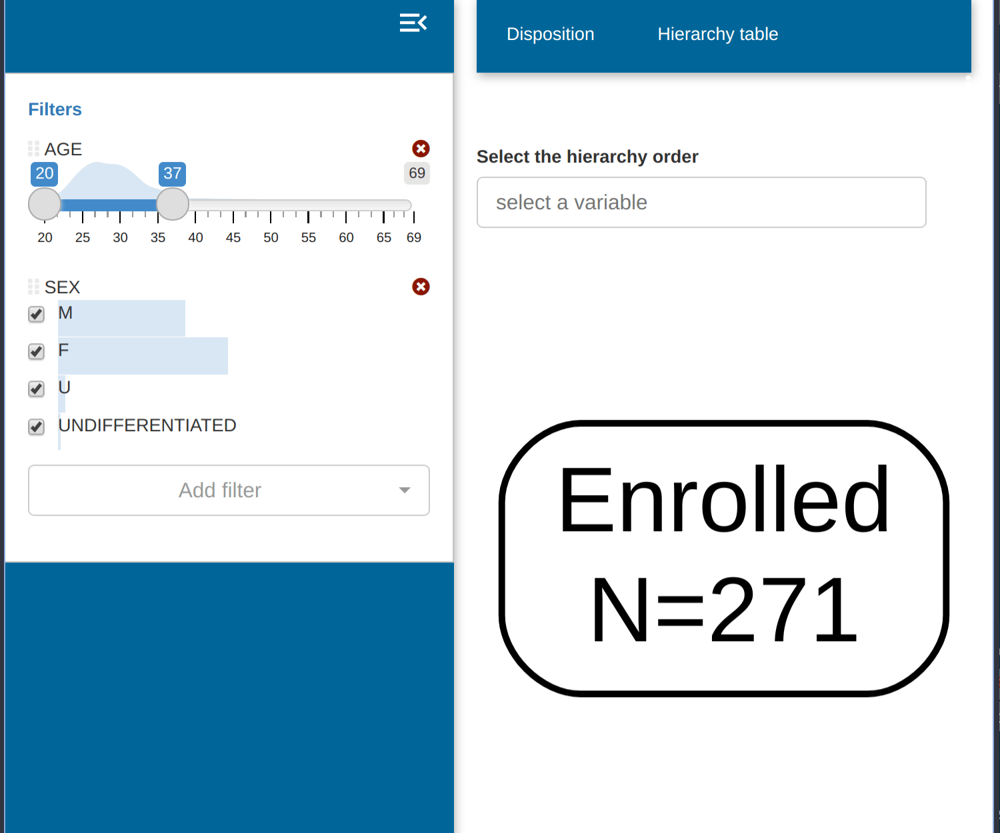
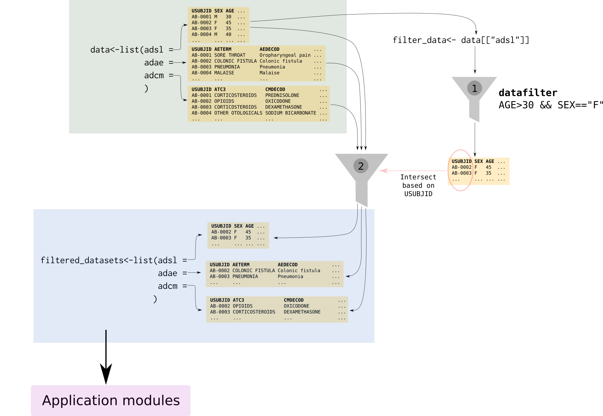

Sidebar filter implementation
data_filtering.RmdPopulation filter
dv.manager include in all applications a population filter for the input data.

In the run_app() call we specify which dataset will be
used for filtering the population in the filter_data
parameter. The fields of this dataset will be displayed in the
filter.
dv.manager::run_app(
data = list("DS" = data),
module_list = module_list,
filter_data = "adsl"
) # Dataset used to filter other datasetsAll datasets passed in the the data parameter will also
be affected by this filtering. The dv.manager, by
default, assumes that all datasets in data and
filter_data have a common field “USUBJID”. This
field will be used as a common key to allow the filtering of all
datasets in data based on the filter_data
dataset. This filtering key can be modified in the
run_app() call by modifying the parameter
filter_key.
The figure below depicts the steps of the filtering process when using the default filtering key “USUBJID”:

In a first step (1), filter_data makes a subselection of
all subjects in the study according to the criteria selected by the user
(in the case of the figure only female participants above 30 years). In
a second step (2), we filter the rest of the datasets in
data and only those subjects that survived the filtering in
step 1 will remain.
Dataset filter
dv.manager includes a filter for each of the datasets, with the exception of the one used in the population filter, that allows filtering the rows in that specific dataset. As opposed to the population filter this filter only affects the dataset itself and not the other datasets in the input data.
This feature is optional and can be activated by setting the
enable_dataset_filter parameter in
run_app.